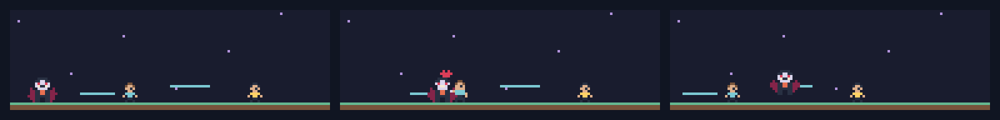
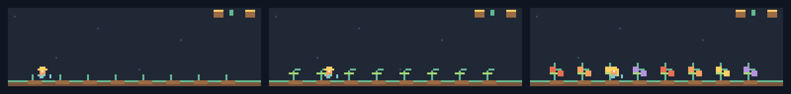
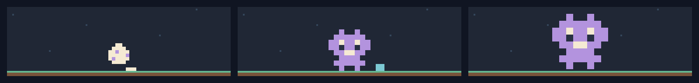
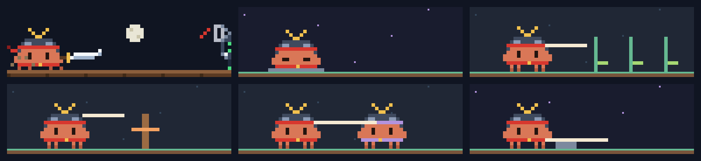
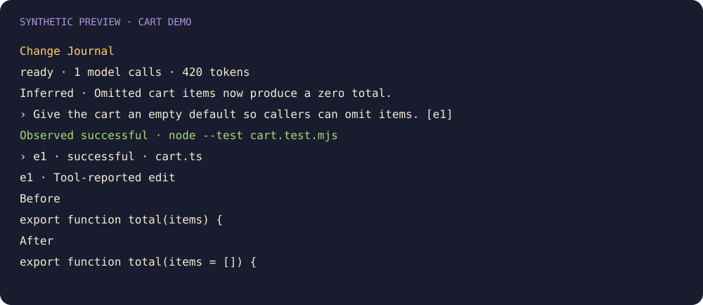
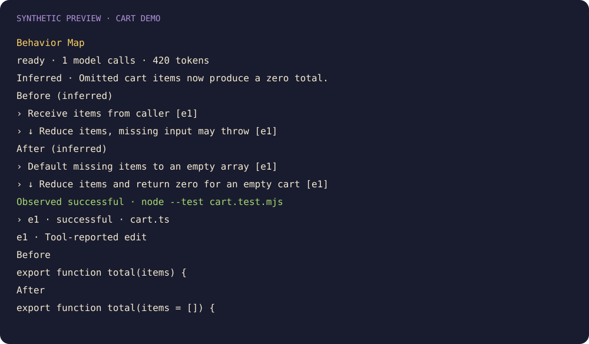

Rendered scenes and synthetic change evidence. Frame strips show several activities; installed scenes animate.
hunting · feeding · jumping

reading · editing · testing

reading · editing · testing

searching · reading · editing · testing · working · idle


